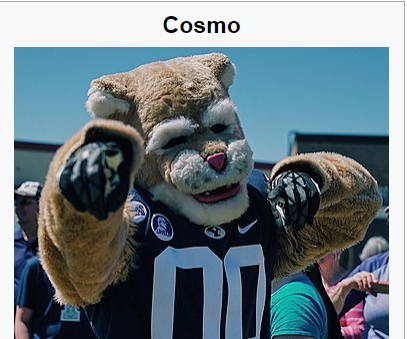

Cuba Cosmo
On October 15, 1953, Cosmo made his first appearance in front of BYU fans.[2] Dwayne Stevenson, the pep chairman of BYU, bought the costume for $73 and persuaded his roommate Daniel T. Gallego to wear it and thus become the first Cosmo.
- The name Cosmo derives from the word "cosmopolitan.
- Cosmo made his first appearance in front of BYU fans.
- LaVell Edwards, the legendary football coach for the Cougars, wore the Cosmo costume during the final season basketball game against Utah in 1981.

Link to Index